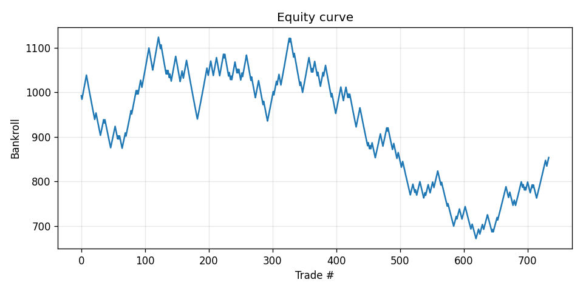
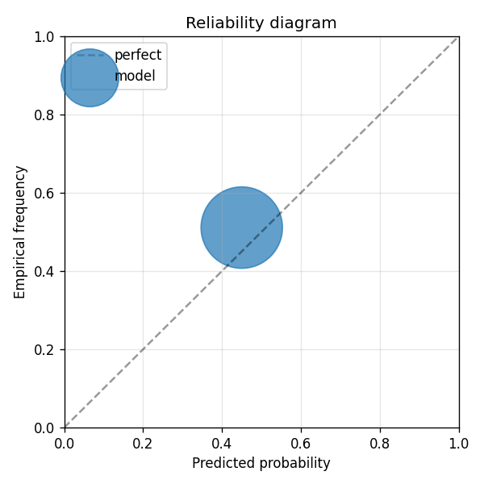

Mid-cap altcoin perpetual futures. Edge thesis: hourly bars + funding rate + log-return dynamics on tokens that institutional quants ignore. v1 uses ONLY structured OHLCV + funding data (no sentiment text), so this is a baseline test: does a transformer on raw price/funding beat a naive 50/50 directional prior after commission+slippage? Survivorship-bias warning: we restrict to currently-listed coins; the universe is curated post-2024 survival, which inflates backtest expectations 30-50% per research/03-backtest-hygiene.md.
| metric | value |
|---|---|
| brier_model | 0.2511971623764386 |
| brier_market | 0.25 |
| brier_improvement | -0.0011971623764385764 |
| accuracy_model | 0.4891008174386921 |
| accuracy_market | 0.510899182561308 |
| n_events | 734 |
| n_trades | 734 |
| hit_rate | 0.4891008174386921 |
| gross_return | -0.14656512549882583 |
| net_return | -0.14656512549882583 |
| sharpe | -0.7595689519075699 |
| max_drawdown | -0.4026057799574112 |
| label_shuffle_brier_improvement | null |

